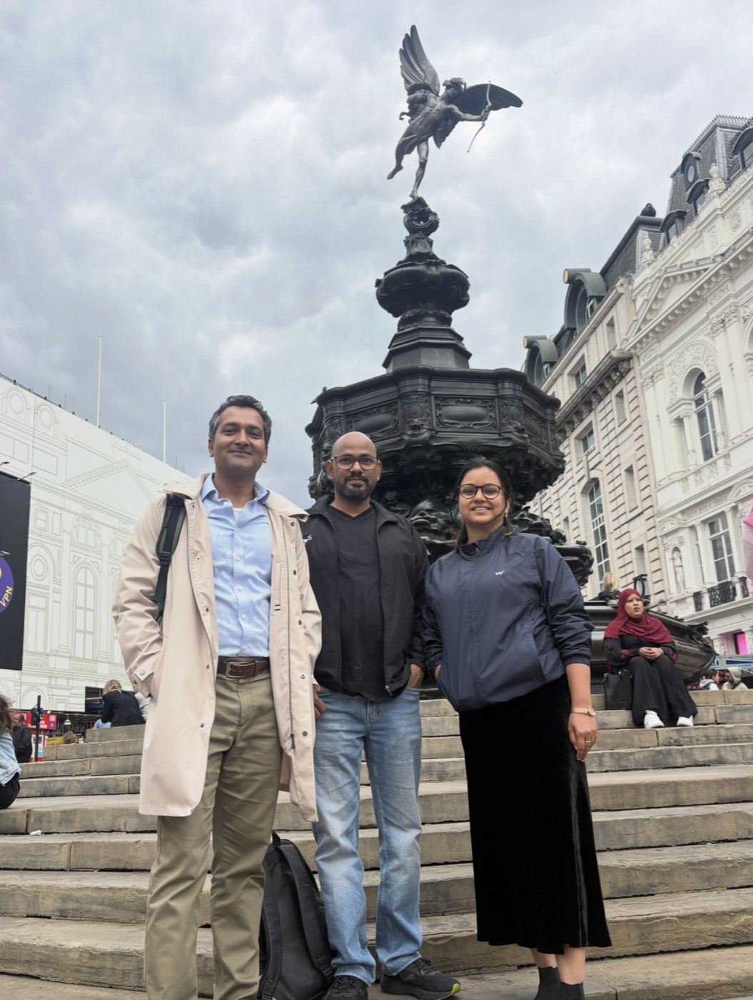
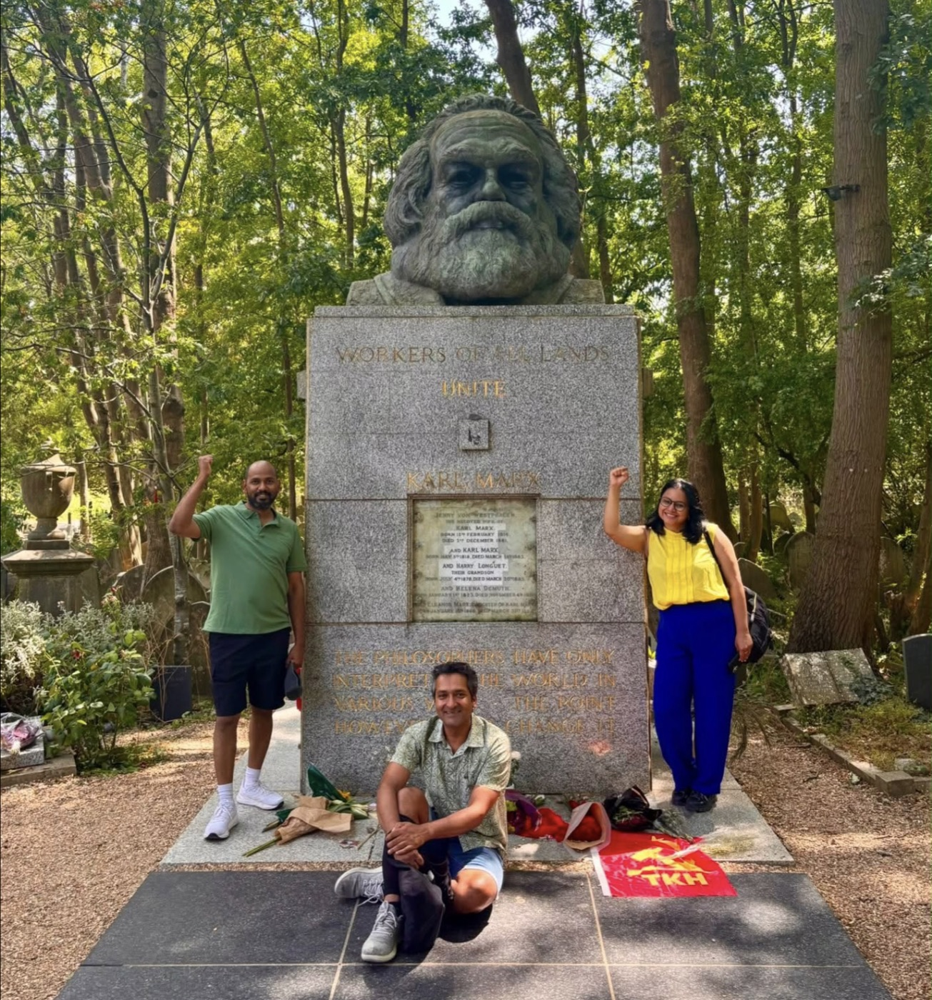

साथी अखिल के साथ जब भी यहाँ लंदन में मुलाक़ात होती है, मन ख़ुश हो जाता है। लगता है कोई अपना-सा है। और यही खासियत है जेएनयू की। जेएनयू के पुराने साथियों और दोस्तों से चाहे जितने दिनों बाद भी मिलें, जेएनयू फिर से जी उठता है। हाल ही में हम और राहुल उनके घर गए थे। हमेशा की तरह घंटों बातें हुईं—जेएनयू, पुराने साथी, कैंपस की राजनीति, बहसें, किताबें, समाज और राजनीति। दिलचस्प बात यह है कि जेएनयू छोड़े हुए बरसों हो गए, लेकिन हमारी बातचीत आज भी बार-बार वहीं लौट जाती है। शायद इसलिए कि जेएनयू सिर्फ़ एक विश्वविद्यालय नहीं, बल्कि सोचने, सवाल करने और दुनिया को देखने का एक नज़रिया भी है।
इसी दौरान हम साथ में मार्क्स की समाधि (Marx's Grave) भी गए। वहाँ खड़े होकर इतिहास, विचार और संघर्ष की उस विरासत को महसूस करना अपने आप में एक अलग अनुभव था। ऐसे स्थान हमें याद दिलाते हैं कि विचार सीमाओं और समय से कहीं बड़े होते हैं। हम थोड़ा इमोशनल भी हुए। अखिल की सबसे बड़ी खूबी उनकी सादगी और सहजता है। वे गंभीर हैं, लेकिन बिल्कुल भी बोझिल नहीं। वे बहुत अच्छा खाना भी बनाते हैं। उनके लिए घर का काम कोई "मदद" नहीं, बल्कि जीवन का स्वाभाविक हिस्सा है। और मेरे लिए समानता और बराबरी रोज़मर्रा की आदतों और व्यवहार से बनती है। मेरे लिए घर के कामों में बराबरी किसी विचारधारा का अतिरिक्त अध्याय नहीं, बल्कि उसकी पहली सहज अभिव्यक्ति होती है। मुझे अपने किसी भी साथी को इतना सहज देख कर बहुत अच्छा लगता है।

अखिल का बौद्धिक काम भी हमेशा की तरह गंभीर और समाज के प्रति प्रतिबद्ध है। हाल ही में उनकी पुस्तक "फ़ेक न्यूज़, मीडिया और लोकतंत्र" प्रकाशित हुई है। ऐसे समय में, जब झूठी सूचनाएँ लोकतांत्रिक विमर्श और सामाजिक विश्वास को लगातार चुनौती दे रही हैं, इस विषय पर गंभीर लेखन बेहद ज़रूरी है। मुझे लगता है कि यह किताब मीडिया, लोकतंत्र और समकालीन राजनीति को समझने वाले पाठकों के लिए एक महत्त्वपूर्ण योगदान साबित होगी। अखिल उन साथियों में हैं जिनके साथ बातचीत हमेशा कुछ नया सोचने पर मजबूर करती है। ऐसे दोस्त और साथी जीवन में कम मिलते हैं—जो जितने अच्छे विचारों के हों, उतने ही अच्छे इंसान भी। शायद यही जेएनयू की सबसे खूबसूरत विरासत है—रिश्ते, विचार और संवेदनशीलता। प्रिय साथी अखिल, आपकी पुस्तक के लिए हार्दिक शुभकामनाएँ। उम्मीद है आपका लेखन आने वाले समय में भी लोकतंत्र, समाज और सच की लड़ाई को और मज़बूत करेगा। लाल सलाम, साथी।
← Back to Travelling